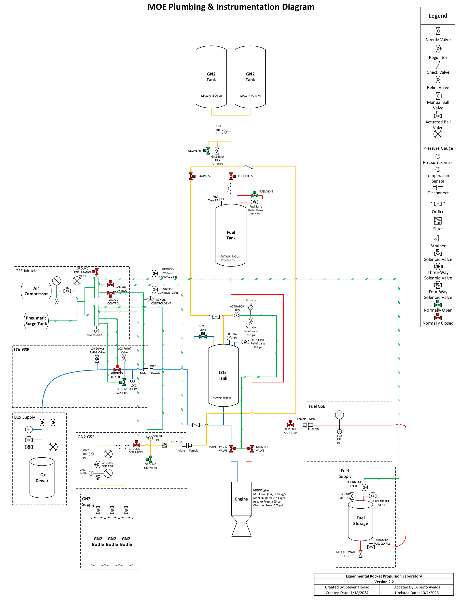
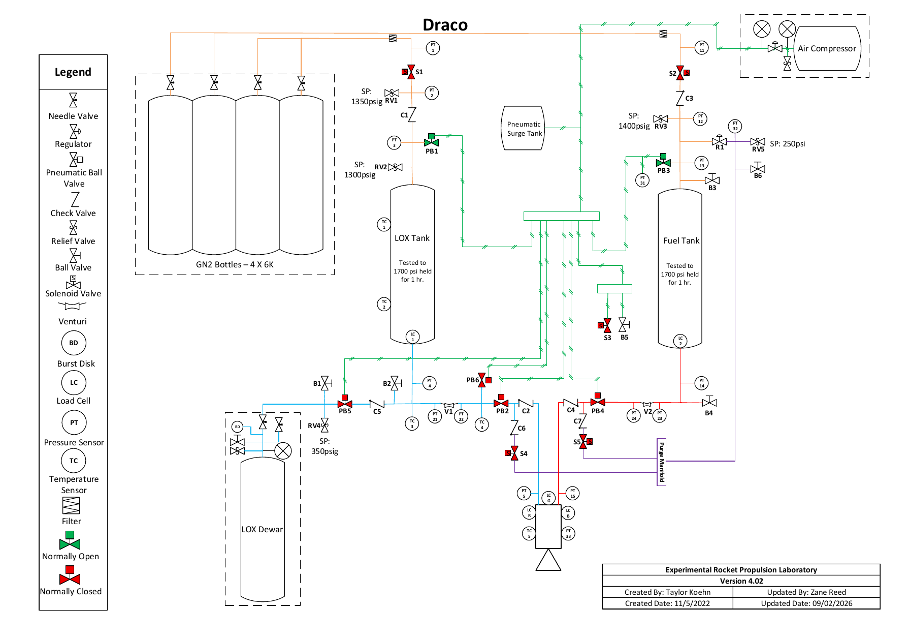

Overview
At the Experimental Rocket Propulsion Lab I'm a test operator on Draco, the lab's high-pressure LOX/IPA bi-propellant GSE and feed system. It runs off a bank of 6K GN2 bottles that pressurize a LOX tank and a fuel tank (both proof tested to 1,700 psi), and it feeds the engines and component rigs the lab tests out at the pad.
What I do
- Operate the GSE and feed system during pressurization, water flow and hotfire tests, following the operating procedures and calling out to the test conductor in a correct, safe and time-efficient way.
- Run pre-test checkouts on the press and feed systems, instruments and valves, verifying safety-critical parameters and interlocks.
- Monitor real-time sensor data during the test to catch and flag anomalies.
- Do post-test inspections and data review to characterize system performance or track down anomalies.
The GSE
The ground support equipment is what gets the system to a test-ready state: a pneumatic "muscle" (air compressor and surge tank) that actuates the valves, GN2 GSE that loads the pressurant tanks from supply bottles, LOX GSE that fills the LOX tank from a dewar, and fuel GSE that fills the IPA tank, all through quick disconnects so the pad can be cleared before a hotfire. The MOE P&ID below shows how the GSE ties into the vehicle-side tanks and the MOE engine.
Before becoming an operator (Aug 2023 onward) I worked on assembling and maintaining the cryogenic feed system and component test rigs, and on analyzing test data to optimize feed system designs and sequences.
Media

